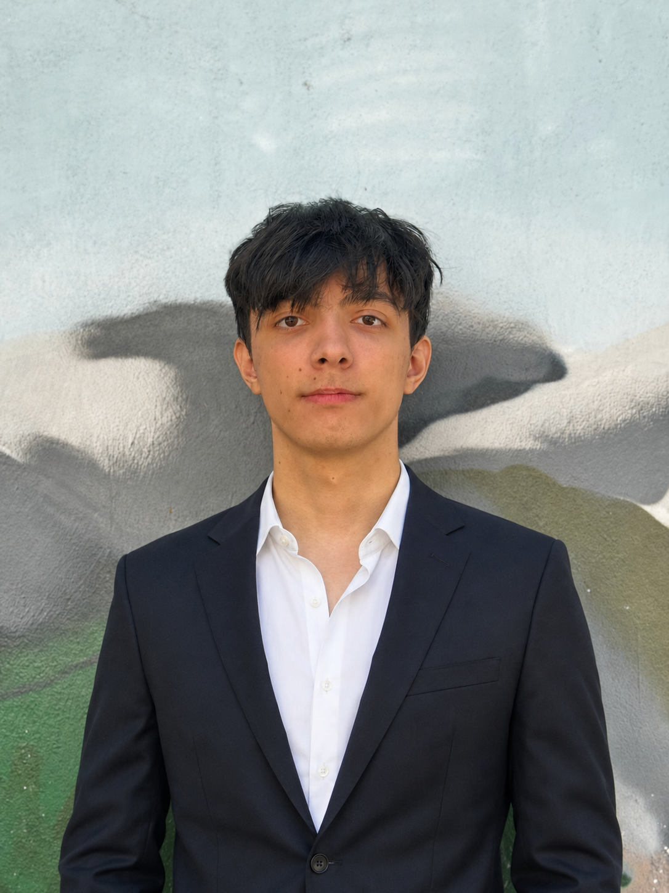
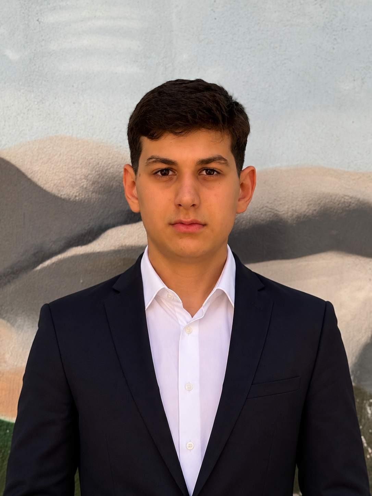
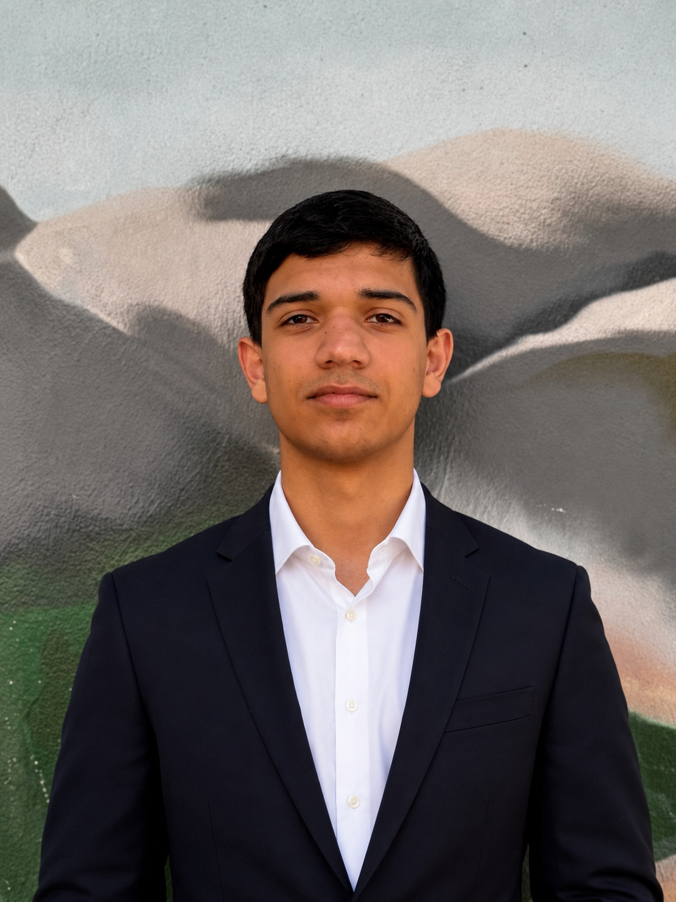

About Caspian Guardians
Protecting the Caspian Sea Through Research, Data and Action
Caspian Guardians is a youth-led environmental initiative founded by Umid Qurbanli, Rauf Novruzlu and Hamid Shahbazov. Based in Baku, we work to raise public awareness, collect environmental information, and encourage practical action for the protection of the Caspian Sea.
Our Story
Why We Started
For us, the Caspian Sea is not just a geographical landmark. As people who grew up in Baku, it has always been part of our everyday life — walks along the coast, swimming in the sea, spending time near the shoreline, and seeing how strongly the city is connected to it.
Over the years, we have also seen the problem with our own eyes. Places where there used to be water during our childhood have turned into wide stretches of dry land. The retreat of the sea, together with pollution and careless waste disposal, made it clear that the Caspian needs more public attention, more organized information, and more people willing to act.
Caspian Guardians was created because we believe that the future of the Caspian Sea should not be ignored. Our goal is to help protect its fragile ecosystem from long-term environmental degradation by combining awareness, research, digital tools and real community action.
Founded in Azerbaijan
Caspian Guardians began as a local youth initiative from Baku, but the issue we focus on is much larger than one city. The Caspian Sea connects five countries, millions of people, and a unique natural ecosystem that deserves serious protection.
Mission
Our Mission
Our mission is to make the environmental problems of the Caspian Sea visible, understandable and impossible to ignore. We do this through research, public awareness, digital monitoring, educational content and direct environmental action.
Research & Analysis
We study the environmental challenges affecting the Caspian Sea, including shrinking water levels, pollution, waste accumulation and ecosystem pressure. Our aim is to explain these problems clearly and support future prevention.
Public Awareness
We create accessible content that helps people understand what is happening to the Caspian Sea and why it matters for Azerbaijan, the region, and future generations.
Cleanups & Community Action
We organize and support beach cleanups, encourage responsible habits, and involve young people and local communities in practical environmental action.
- Publishing educational materials about the Caspian Sea and its environmental risks
- Researching visible and long-term changes affecting the sea and its coastline
- Organizing beach cleanup activities and encouraging volunteer participation
- Using digital platforms to make environmental information easier to access
- Helping citizens report pollution and take part in local environmental action
Digital Platform
Caspian Guardians Database
One of our key projects is the Caspian Guardians Database — a digital platform created to collect, organize and display environmental information related to the Caspian Sea.
The database allows users to monitor reported waste areas, view pollution points on a map, follow collected data, and better understand where environmental action is needed. Instead of keeping environmental problems invisible, the platform helps turn scattered observations into usable information.
Users can also contribute by reporting places where waste is found. This helps other volunteers and community members identify cleanup locations, organize local action, and support a more data-based approach to protecting the Caspian coastline.
What the Database Helps With
- Mapping visible waste locations
- Collecting user-submitted reports
- Tracking cleanup-related information
- Supporting volunteer coordination
- Making environmental problems easier to monitor
Why It Matters
Why the Caspian Sea Matters
Largest Inland Body of Water
The Caspian Sea is the world’s largest inland body of water, making it one of the most important and unusual water ecosystems on Earth.
Shared by Five Countries
Azerbaijan, Kazakhstan, Turkmenistan, Iran and Russia all depend on the Caspian, which makes its protection a regional responsibility.
Under Environmental Pressure
Pollution, waste, biodiversity loss and changing water levels continue to threaten the sea’s ecosystems, coastlines and long-term health.
Team
Meet Our Founders
Caspian Guardians was founded by a young team from Baku with a shared goal: to turn concern for the Caspian Sea into research, awareness, digital tools and action.

Umid Qurbanli
Co-founder · Technology & Research
Responsible for platform development, digital systems, research support and technology-related operations.

Rauf Novruzlu
Co-founder · Research & Communications
Works on research direction, public communication, social media presence and the initiative’s strategic development.

Hamid Shahbazov
Co-founder · Operations & Fundraising
Supports team organization, fundraising, coordination and keeping project activities structured and on track.
Partners
Our Partners
Our work is strengthened through cooperation with partners who support education, technology, research-oriented thinking and environmental responsibility.
UFAZ
Supports the educational and research-oriented direction of Caspian Guardians.
VERIX Creative Technologies
Supports the digital and technological side of the initiative, including web presence and platform development.
Take Action
Help Protect the Caspian Sea
Environmental change becomes harder to ignore when people collect information, share evidence and take action together. Follow our work, report pollution, support cleanups and help bring more attention to the future of the Caspian Sea.
Take Action